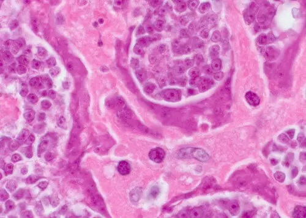

A ROSSZ LEHELET A PARAZITÁK ELSŐ JELE
Az Orvosi Parazitológiai és Trópusi Medicina Intézet 2021-ban sikeresen befejezte az új generációs termék klinikai vizsgálatait. paraziták leküzdésére tervezték. Az intézet sajtószolgálata az alábbiakat tette közzé:
1. Hatékonyság standard módszerrel (a felépült betegek száma a kezelésben részesült 100 fős csoport teljes betegszámához viszonyítva) a következőket kaptuk:
- - A helminthiasis és a peték megszüntetése - 100%
- - A hasnyálmirigy funkcióinak és általános állapotának rendszeresítése - 80%.
- - Allergiás dermatitisz megszüntetése - 90%.
- - Gasztritisz, fekélyek, hasmenés megszüntetése - 90%.
- - A vérszegénység megszüntetése - 100%.
2. Nem azonosítottak nem kívánt mellékhatásokat, beleértve az allergiás reakciókat.
Kutatói interjú:
Szergej Kirikov - az Orvosi Parazitológiai és Trópusi Orvostudományi Intézet Kutatási Osztályának vezetője. Több mint 60 tudós dolgozik a molekuláris parazitológia területén. Szakmai tapasztalat - 21 évDr. Victoria Arama az Orvosi Parazitológiai és Trópusi Medicina Intézet Kutatási Osztályának vezetője. Több mint 60 tudós dolgozik a molekuláris parazitológia területén. Szakmai tapasztalat - 12 évDr. Erwin Bucks az Orvosi Parazitológiai és Trópusi Medicina Intézet kutatási vezetője. Több mint 60 tudós dolgozik a molekuláris parazitológia területén. Szakmai tapasztalat - 19 évZhiman Vitold - az Orvosi Parazitológiai és Trópusi Medicina Intézet Kutatási Osztályának vezetője. Több mint 60 tudós dolgozik a molekuláris parazitológia területén. Szakmai tapasztalat - 40 év
A rossz lehelet új okát fedezték fel az Orvosi Parazitológiai és Trópusi Medicina Intézetben: egy parazitafertőzést. Egy nemrég elkészült tanulmány szerint a paraziták salakanyagai mérgezők, és kedvező környezetet teremtenek a rothadó baktériumok növekedéséhez a gyomorban. Ez az oka annak, hogy a parazitákkal fertőzött embereknek rossz leheletük van.
Ma Alejandro Barretoval (geohoz adaptálva), szakemberrel, az Orvosi Parazitológiai Intézet vezetőjével beszélgetünk.
- Helló! Köszönjük, hogy időt szakított ránk. Térjünk át a fő kérdésre: igaz-e, hogy hazánk élen jár a lakosság parazitafertőzöttségének tekintetében?
- Tényleg az. Vezető helyet foglalunk el a fertőzések osztályozásában. Ennek oka a rendkívül rossz környezeti helyzet, a hatóságok tétlensége és az emberek iránti figyelmetlensége.
- Igaz, amit a tanulmány mutat a kapcsolat a parazita fertőzések között akár rossz is lehet?
- Pár éve az orvostársadalom úgy gondolta, hogy a szájban rossz lehelet keletkezik. A legújabb tanulmányok azonban kimutatták, hogy a gyomor- és májproblémák egy másik fontos ok. A tudósok azt is mondják, hogy egy nyilvánvaló `közös tünet` figyelmen kívül hagyása veszélyes. A fertőzés szinte bármelyik súlyos betegséghez vezethet, amelyekben az emberek szenvednek.
Munkatapasztalataim alapján bátran kijelenthetem, hogy az ilyen vizsgálatok összes eredménye rendkívül megbízható. Valami olyan gyakori, mint a „rossz lehelet” felgyülemlik, és súlyos betegséggé válik. A halálozások körülbelül 92%-át parazitafertőzések okozzák, és ez nem csak magából a betegségből eredő haláleset. Az úgynevezett `természetes halálesetek` túlnyomó többsége a szervezetben és a szervekben található paraziták következménye.
- Általában az emberek azt hiszik hogy a paraziták egyszerű férgek. Tehát hogyan okozhatnak rossz leheletet és akár halált is?
Valójában az az elképzelés, hogy az emberi paraziták csak férgek, nagy álhír. Számos parazita él a test különböző szerveiben, ezért ezek nagyon eltérő következményekkel járnak. A földigiliszták, vagy inkább a helminták nagyon veszélyesek. Szó szerint elpusztítják a beleket, belső rothadást okozva. Ez végzetes. És mellesleg a helmintákat nagyon nehéz felismerni és elpusztítani.
Ezzel a különleges típusú orsóféreggel együtt több ezer fajta parazita élhet a májban, az agyban, a tüdőben, a vérben és a gyomorban, és szinte mindegyik halálos. Vannak, akik azonnal agresszívan lépnek fel, tönkretéve a testet. Mások egy ideig észrevétlenül cselekszenek, amíg a „tulajdonos” teste meg nem szűnik működni, és a személy meg nem hal.
Ugyanakkor bátran kijelenthetem, hogy szinte mindenki fertőzött. A legtöbb gilisztafajt rendkívül nehéz kimutatni. Amikor az emberek elkezdik észrevenni a parazita fertőzés több tünetét, az orvosok a tüneteket próbálják kezelni, nem az okokat megkeresni. Néha még a boncolás sem mutat ki egyes típusokat, ez speciális elemzéseket igényel. Legalábbis a legtöbbjük számára.
Több ezer fajta parazita élhet a májban, az agyban, a tüdőben, a vérben és a gyomorban; szinte mindegyik végzetes. Általában egy egyszerű rossz lehelettel kezdődik.
- Tudna konkrét példákat mondani orvosi fertőzéses esetek?
Ezreket tudnék megnevezni, de azokra összpontosítok, amelyek a legvilágosabban mutatják a veszélyt.
Először is kiderült, hogy bizonyos típusú cestodes rákot okoz. Azonban nem egy ember kap rákot, hanem a féreg okozza. Rákos sejtjei az egész szervezetben elterjednek, megfertőzve a gazdát. Ez akkor fordul elő, amikor a lárva a bélből az emberi nyirokcsomóba kerül. Végül rosszindulatú daganattá alakul. A halál szó szerint néhány hónapon belül következik be. Múlt héten egy újabb halálesetről számoltunk be egy ilyen daganat miatt.
A kép közepén: egy rosszindulatú daganat sejtjei, amelyek parazitától terjedtek az emberre.
Egy másik gyakori eset az emberi agy fertőzése. Ez idegességhez, fáradtsághoz, túlzott ingerlékenységhez és hangulati ingadozásokhoz vezet. Egy későbbi szakaszban pedig, amikor az agy megtelik parazitákkal, más súlyosabb betegségek is kialakulnak, amelyek végül halálhoz vezetnek.
Fényképarchívumunk van: a boncolás során készült képek, amelyeken különféle élősködőket találtunk a test szerveiben. Íme néhány példa, de figyelem, szörnyűek.
Férgek az eltávolított epehólyagban:
Az emberi agyban rákot okozó paraziták:
Dirofilaria immitis szívmegállást okoz:
A harmadik példa az emberi szív fertőzése. Ritka állapotnak tartják. Valójában azonban az emberek 23%-ának van Dirofilaria Immitis-je. Vagyis a lakosság minden negyede. Korai stádiumban teljesen láthatatlanok, a szervezetre gyakorolt káros hatásuk nullára csökken. De minél tovább van ott, annál inkább észreveszik tevékenységét az emberi szívben. Különféle szívbetegségek fő okozójává válnak; és ha a szívleállás miatti hirtelen halálról beszélünk, akkor ezek a paraziták 100%-ban okozzák.
- Mire veszélyes még a fertőzés?
- A férfi szervezetben ezek a paraziták prosztatagyulladást, impotenciát, adenomát, hólyaggyulladást, homokot, veseköveket és epehólyagot okozhatnak. Nőknél a petefészek fájdalma és gyulladása, mióma kialakulása, cisztás rostos mastopathia, mellékvese-, epehólyag- és vesegyulladás és természetesen a bőr idő előtti öregedése, ráncok, szem alatti táskák, szemölcsök és papillómák az arc és a test.
— Hogyan védekezhet a paraziták ellen? Vannak gyógyszerek és tesztek?
Sajnos jelenleg lehetetlen megerősíteni, hogy létezik-e pontos műszer a paraziták emberben történő kimutatására. Ennek oka egyrészt a parazitafajok nagy száma (több mint 2000 ismert), másrészt kimutatásuk bonyolultsága. A teljes elemzési eljárás szó szerint kevés helyen érhető el, és sok pénzbe kerül.
Az első tünetek, amelyek a paraziták jelenlétét jelzik a szervezetben:
- Rossz lehelet;
- Allergiás reakció (kiütés, könnyező szem, orrfolyás);
- Bőrkiütés és bőrpír;
- Gyakori megfázás, torokfájás, orrdugulás;
- Krónikus fáradtság;
- Gyakori fejfájás;
- Székrekedés vagy hasmenés;
- Ízületi és izomfájdalom;
- Idegesség, étkezési és alvási zavarok;
- Táskák és duzzanat a szem alatt.
Ha ezen tünetek bármelyikétől szenved, 99%-os valószínűséggel paraziták vannak a szervezetében. És a lehető leghamarabb meg kell szabadulnia tőlük!
A parazitafertőzések kezelésére szolgáló gyógyszerekkel kapcsolatos jelenlegi helyzet meglehetősen problematikus. A mai napig egyetlen olyan termék van a piacon, amely képes teljesen megszabadulni a parazitáktól.
Parazitaellenes gyógyszer Parazitológiai Intézetünk és fiatal tudósokból álló független csoport részvételével készült. Ugyanakkor több mint két tucat másik kezeléssel dolgozunk. A fejlesztési folyamat során azonban meghatároztuk mint a leghatékonyabb.
hínár- és chaga-kivonatot, rezveratrolt és egyéb kisebb összetevőket tartalmaz. A létrehozási és tesztelési folyamat során ez a termék rendkívül hatékonynak bizonyult. Ma ez az egyetlen produktív fejlesztés a piacon. És ez nem a pénzről szól, különben a teljes kibocsátás ebben az esetben csak az exportszükségletekre irányul. Más országok orvosi egyesületei készek vásárolni bármi áron. Ám az egészségügyi minisztérium rendelete szerint a termék jelentős részének az országban kell maradnia.
Ezen túlmenően az export felár a nyugati vásárlóknak ( értékének tízszeresébe kerül), ami lehetővé teszi, hogy országunkon belül a bekerülési értéke alatti áron értékesítsük.
- Mi a jó a ban? Miben különbözik a test parazitáktól való megtisztításának egyéb módszereitől?
- Mint mondtam, ma ez az egyetlen termék a világon, amely megtisztítja a szervezetet a parazitáktól. Ezért minden nemzetközi gyógyszertári lánc és gyógyszercég nagyon szereti. Más parazitaellenes szerekhez képest közvetlenül a paraziták teljes spektruma ellen hat. Figyelembe véve a paraziták kimutatásának óriási kihívását, hatékonyan méregteleníti az egész szervezetet. Korábban már említettem, hogy szinte lehetetlen megérteni, hogy milyen típusú parazita fertőzi meg a beteget, tehát a elpusztítja és eltávolítja a szervezetből minden élősködőt, amely az agytól és a szívtől a májig és a belekig él. Nincs még egy ilyen tulajdonságú termék.
Hasonlóképpen, nem áll sok vegyi anyagból. Ez egy teljesen természetes termék, amely kiküszöböli az allergiás reakciókat, a bél mikroflóra egyensúlyhiányát és egyéb problémákat, amelyek az agresszívabb gyógyszerekkel történő kezelés során merülnek fel. Ezeken a hatásokon kívül megterhelik a szervezetet, mivel jó néhány különböző kémiai vegyület megemésztésére kényszerítenek bennünket.
- Mennyi ideig tart a alkalmazása, hogy hatásos legyen?
A legjobb eredményt egy 30 napos vagy hosszabb adagolási kúrával éri el. Ezután két hét szünet után megismételheti a kezelést. A legfontosabb dolog az, hogy megértsük, hogy a hatása a teljes használat után lesz. A tisztítás három szakaszban történik. Az 1. szakaszban a hínárkivonatnak köszönhetően a test teljesen megtisztul. A 2. szakasz a chaga kivonat aktív összetevőinek köszönhetően javítja a vesék, a máj és a szív- és érrendszer működését. A 3. szakasz gyógyítja a szervezetet és erősíti az immunrendszert a resveratrol és a pitypang gyökér kivonatának köszönhetően. Ezért nagyon fontos, hogy ne szakítsa meg a kezelést és fejezze be a teljes kúrát.
- Azt hiszem, olvasóinkat érdekelni fogja, hol lehet megvenni a t !
- Jelenleg a t megvásárolni csak a szolgáltató hivatalos honlapján lehetséges. Sokszor próbáltunk már tárgyalni gyógyszerláncokkal, de soha nem értettek egyet a árával, és jóval magasabb áron akarták eladni, mint a miénk. Tudja, a Parazitológiai Intézet non-profit szervezet, és van egy célunk, amit el kell érnünk. Azt akarjuk, hogy termékünk a teljes lakosság számára elérhető legyen. Tehát veszteségesen adjuk el magunkat, az export különbségétől függetlenül. A gyógyszeripari láncok fő célja, hogy minél több pénzt keressenek. Tehát teljesen más megközelítést alkalmazunk az árképzéshez.
Reméljük végül sikerül megegyeznünk és a ugyanazon az áron értékesíthető lesz a gyógyszertárakban. Addig is csak online vásárolható meg weboldalunkról. Arra törekszünk, hogy minden kényelmes és egyszerű legyen: az árut futár szállítja ki, a fizetés a megrendelés átvétele után történik. Ez olyan egyszerű.
Szeretne valamit elmondani olvasóinknak az interjú befejezése előtt?
Az egyetlen dolog, amit szeretnék mondani: `vigyázz az egészségedre`. Lehet, hogy ezt nem tudod, de 97-98% esély van arra, hogy paraziták vannak a szervezetedben. Bárhol lehetnek: a vérben, a belekben, a tüdőben, a szívben, az agyban stb. A paraziták szó szerint belülről esznek meg, miközben egyidejűleg mérgezik a szervezetet. Hiszen sok olyan probléma van, amely 15-25 évvel lerövidítheti a várható élettartamot. A hirtelen halálesetek többsége általában az emberi szervezetben lévő parazitákhoz kapcsolódik.
Ma az eredeti csak a hivatalos honlapon rendelhető meg. .